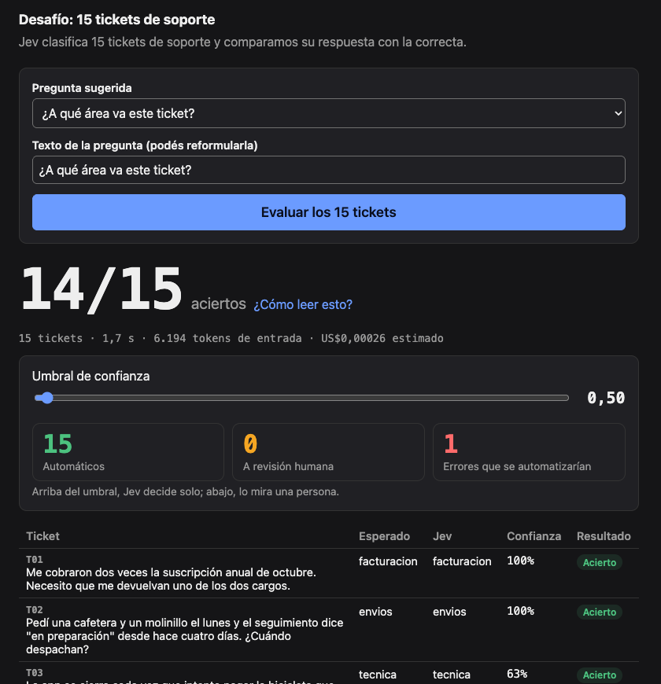

charla interna · 22/10/2026
Un modelo que evalúa, no que conversa.
01 · qué es
Sin prompt engineering de formato ni parseo: el tipo de la respuesta lo fija la pregunta.
02 · jev vs. llm
| Jev | LLM | |
|---|---|---|
| Salida | probability / choice / score + distribución | Tokens de texto |
| Formato | Garantizado por tipo de pregunta | Depende del modelo y del prompt |
| Latencia | < 1 s por evaluación | Crece con el largo de la respuesta |
| Precio | US$0,042 / M tokens de entrada | Bastante más caro por token |
| Razonamiento | No explica ni encadena pasos | Chain-of-thought, tool use |
03 · system one
Rápido, automático, un juicio de un vistazo.
"¿Este cliente está enojado?"
Lento, deliberado, paso a paso.
"Calculá el reintegro con estas tres reglas."
Kahneman describe dos modos de pensar. Muchas decisiones de un sistema son de Sistema 1, y pagar Sistema 2 por cada una es caro y lento.
04 · tipos de pregunta
¿El cliente pide un reembolso?
→ probability: 0.98
¿A qué área va? facturación, envíos, técnica o cuenta
→ choice: "envios" + probabilities
¿Qué tan urgente es? baja, media, alta
→ score: Σ i·p(i), desde 0
Una pregunta = una sola cosa. Opciones que no se pisen. Niveles de menor a mayor.

05 · el desafío
Ustedes dictan la pregunta, Jev evalúa los 15 en paralelo y el marcador muestra en qué acierta, con qué confianza y dónde falla.
Vamos a la demo →
06 · resultados medidos
| Ticket | Esperado | Jev | Confianza |
|---|---|---|---|
| T06 · TV rota, pide la plata | envíos | facturación | 0,72 |
| T11 · filtro de precio roto, "no es urgente" | baja | media | 0,53 |
La doc marca contar como límite; acá acertó 15/15. Medilo con tus casos.
07 · costo y riesgos
US$0,00026 estimado
6.194 tokens de entrada · 1,3 s
Cota inferior: el precio de salida no está publicado.
12 automáticos · 3 a revisión
0 errores automatizados
Con 0,5: 15 automáticos y 1 error se cuela.
08 · integración
09 · tu turno
texto→pregunta cerrada→umbral→acción
Logs, PRs, tickets, alertas, outputs de otro LLM: cualquier texto que hoy alguien lee para decidir algo simple.
gracias
Pestaña Docs para la referencia completa · video del desafío: próximamente en el repo.